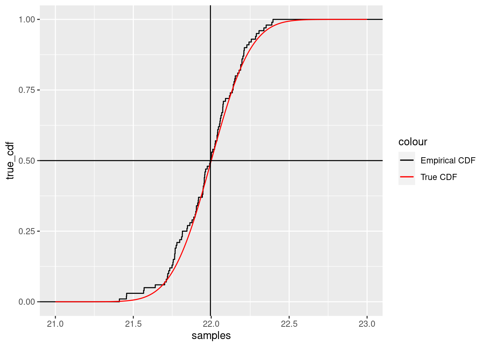

Probability
Fundamentals of Data Science
Populations and Samples
Probability Theory
Probability theory is based on:
- An underlying collection \(S\) of all possible outcomes (a population or sample space) of an experiment.
- A rule \(P\) that assigns a number between zero and one to each subset of the sample space satisfying certain rules.
Sample Space
For example:
For a flip of a single coin, the possible outcomes are Heads and Tails and the sample space has two elements. For multiple flips, the outcomes are sequences of Heads and Tails.
For a measurement of temperature, we might model the possible outcomes, or the sample space, as all real numbers, recognizing that only some of them are actually possible results of the experiment.
Simple Events
The elements of the sample space or population are the outcomes or simple events or sample points.
For a flip of a coin, the possible outcomes are Heads or Tails. For multiple flips, the possible outcomes are particular sequences of Heads or Tails.
For a measurement of temperature, a simple event would be a particular number obtained at a particular time.
Events
Subsets of the population make up events or outcomes.
Among the population made up of sequences of 10 coin flips, the subset consisting of sequences containing at least 3 heads is an event.
Among the measurements of temperature, a measurement lying between say 22 and 25 degrees celsius would be an event.
Probability Measure
The last element of probability theory is the function P that assigns a number between 0 and 1 to every event such that
- \(P(\emptyset)=0\)
- \(P(S)=1\).
- If \(A\cap B=\emptyset\) then \(P(A\cup B)=P(A)+P(B)\). This is also required to hold for infinite collections of disjoint sets but we won’t worry much about the foundations of probability.
Random Variables
A random variable is a rule that assigns a number to an event.
- We can assign the value 1 to heads and 0 to tails. This is a bernoulli random variable.
- Our sample space can be sets of 10 coin flips. The number of heads is a random variable.
- The measurement of temperature yields a number.
- If we pick a person at random, we can assign the value 1 if they wear glasses and 0 if not.
Discrete vs Continuous Random Variables
A discrete random variables takes “separate” values depending on the event. A continuous random variable takes values in a range.
- Bernoulli random variable is discrete (0/1)
- Number of heads in 10 flips is discrete (takes values 0,…,10)
- Temperature is continuous (in principle can get any reading)
- Mass of a penguin is continuous
- Species of penguin is discrete
Events and Random Variables
Specifying a value, or a range of values, for a random variable defines an event.
Bernoulli example
- Sample space is \(\{H,T\}\)
- \(P(H)=p\)
- \(X\) is the random variable with \(X(H)=1\) and \(X(T)=0\)
Then:
- \(X=1\) is the same as the event \(H\)
- \(P(X=1)\)=p
Continuous example
- Sample space is the possible temperatures at a particular point in space and time.
- Random variable \(T\) is a measure of temperature.
- \(P(21<T<22)\) is the probability that the temperature is between 21 and 22 degrees.
Probability density functions
In the continuous case, probability is measured by a probability density function \(P(x)\). The classic example is the normal (bell-shaped) curve.
Area gives probability
If \(P(x)\) is the density function, then:
the probability that \(x\) lies between \(a\) and \(b\) is the area under density function between \(a\) and \(b\).
The shaded area gives probability 0.87 for temp between 21.7 and 22.3.
Standard Normal
A normal curve is defined by two parameters:
- the mean \(\mu\), which sets the location
- the standard deviation \(\sigma\) or its square, the variance \(\sigma^2\), which sets the scale.
If \(x\) is a normal random variable with mean \(\mu\) and variance \(\sigma^2\), then \[ z = \frac{x-\mu}{\sigma} \] is a normal random variable with mean \(0\) and variance \(1\). This is called a \(z\)-score or a standard normal variable.
Cumulative Distribution
The cumulative distribution is a function \(f(x)\) such that \(f(x)\) is the the percentage of samples that are less than \(x\).

So the median of the samples occurs where the \(y\)-axis is \(.5\).
Quantiles
If \(q\) is between \(0\) and \(1\), then the \(q^{th}\) quantile \(Q\) of a random variable \(x\) is the value of \(x\) such that the fraction of the population with \(x<Q\) is \(q\).
The median of \(x\) is the \(.5\) quantile for \(x\) because half of the population has values less than the median.
One can read quantiles from the cumulative distribution.
Order Statistics
The sample median and the sample quantiles (such as the 25th percentile or 75th percentile) are examples of order statistics.
The smallest element, the second smallest element, and so on are other examples of order statistics.
Order Statistics example
We take 100 samples from a normal distribution and compute the median, minimum, and maximum. Then we do that 10000 times and produce a histogram.
The multinomial distribution
The multinomial distribution arises when you have \(n\) outcomes for your experiment, say \(x_1,\ldots, x_n\); and the probability of getting \(x_i\) is \(p_i\). Here we have to have \[ \sum p_{i}=1. \]
This generalizes the bernoulli distribution.
Mean
The mean of a random variable is perhaps the most important statistic associated with a probability space.
The mean is the “average value” of the random variable.
Mean – discrete case
In the discrete case:
\[ \overline{x}=\sum_{a\in X} x(a)p(a) \]
In other words, the mean of \(\overline{x}\) is the sum of \(x\) at each event, weighted by the probability of that event.
Mean of a bernoulli random variable
If \(x\) is bernoulli, with \(p(x=1)=p\), then the mean of \(x\) is \[ p(1)+(1-p)(0)=p. \]
Mean of a binomial random variable
If \(x\) is binomial, corresponding to the sum of \(N\) bernoulli random variables with probability \(p\), then \[ \overline{x} = \sum_{0\le i\le N} i\binom{N}{i}p^{i}(1-p)^{N-i}=Np \]
Mean – continuous case
The mean of a continuous random variable is given by an integral:
\[ \overline{x} = \int_{X} xp(x) dx \]
where \(p(x)\) is the probability density. This is the limiting case of the formula in the discrete case.
Mean of standard normal
The mean of the standard normal is zero.